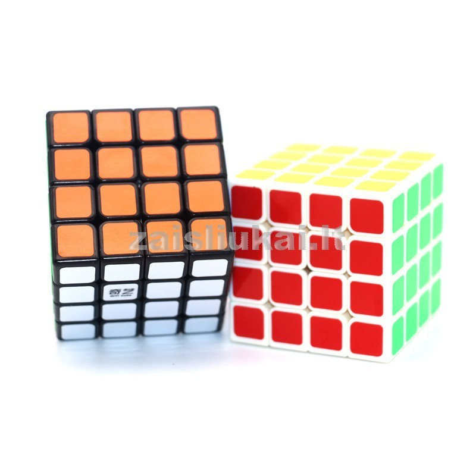

Welcome to Rubiko-kubas
„Rubiko kubas“: surinkimo schema pradedantiesiems, žingsnis po žingsnio instrukcijos
2020.10.29 03:53 Grožis Mados tendencijos Spinta Papuošalai ir aksesuarai Kosmetika ir kvepalai Makiažas Manikiūras Plaukai: priežiūra ir šukuosenos Veido ir kūno priežiūra SPA ir masažas Sveikata Lieknėjimas Dieta ir mityba Produktai ir jų savybės Sportas Nėštumas Vaiko sveikata Ligos Vaistai Liaudies medicina Receptai Salotos Užkandžiai Šoniniai patiekalai Sriubos Pagrindiniai patiekalai Padažai ir padažai Desertai ir kepimas Gėrimai Ruošiniai Vegetariški receptai Veganiški receptai Žalio maisto receptai Virimo patarimai Gyvenimas Psichologija Santykiai Darbas, pinigai Šeima Vaikai Sveikinu Namai ir sodas Interjeras Interjero daiktai Būsto priežiūra Gyvūnai Kambariniai augalai Sodas Daržovių sodas Kraštovaizdžio dizainas Laisvalaikis Filmai ir TV laidos Atostogos Pomėgiai Kelionės Ezoterika Astrologija Svajonių interpretacija Vardai Ženklai Stebuklingi daiktai Likimas Feng shui lt.womanexpertus.com - visa tai, kas svarbu moteriai! Grožis Mados tendencijos Spinta Papuošalai ir aksesuarai Kosmetika ir kvepalai Makiažas Manikiūras Plaukai: priežiūra ir šukuosenos Veido ir kūno priežiūra SPA ir masažas Sveikata Lieknėjimas Dieta ir mityba Produktai ir jų savybės Sportas Nėštumas Vaiko sveikata Ligos Vaistai Liaudies medicina Receptai Salotos Užkandžiai Šoniniai patiekalai Sriubos Pagrindiniai patiekalai Padažai ir padažai Desertai ir kepimas Gėrimai Ruošiniai Vegetariški receptai Veganiški receptai Žalio maisto receptai Virimo patarimai Gyvenimas Psichologija Santykiai Darbas, pinigai Šeima Vaikai Sveikinu Namai ir sodas Interjeras Interjero daiktai Būsto priežiūra Gyvūnai Kambariniai augalai Sodas Daržovių sodas Kraštovaizdžio dizainas Laisvalaikis Filmai ir TV laidos Atostogos Pomėgiai Kelionės Ezoterika Astrologija Svajonių interpretacija Vardai Ženklai Stebuklingi daiktai Likimas Feng shui Namai Namai ir sodas Pomėgiai „Rubiko kubas“: surinkimo schema pradedantiesiems, žingsnis po žingsnio instrukcijos
„Rubiko kubas“: surinkimo schema pradedantiesiems, žingsnis po žingsnio instrukcijos
Skulptorius ir architektas iš Vengrijos Erne Rubik nusprendė sugalvoti vaizdinę priemonę, kuri padėtų jo studentams geriau suprasti grupių matematinę teoriją, tačiau magiškasis kubas taip pamėgo įvairaus amžiaus mokslininkus, kad dėlionė greitai pasklido po pasaulį, todėl jo išradėjas tapo milijonieriumi. „Rubiko kubo“ surinkimo schema iš pirmo žvilgsnio atrodo neįtikėtinai sudėtinga, tačiau jei atidžiai išstudijuosite sukurtus algoritmus ir įsigilinsite į surinkimo principą, išspręsti galvosūkį taps greičio konkurencija.
Medžiagos turinys:
1 Rubiko kubo struktūra ir sukimų pavadinimai 2 Rubiko kubo pastatymo paslaptys: elementai, dalys, pagrindinės sąvokos 3 „Rubiko kubo“ surinkimo pradedantiesiems schemos ir etapai 3.1 Kaip surinkti Rubiko kubą 2x2 3.2 3x3 dėlionė 3.3 Rubiko kubas 4x4 3.4 Greitas 5x5 dėlionės surinkimas 4 Greičiausias būdas. Jessica Friedrich metodas 5 Kaip surinkti Rubiko kubą užmerktomis akimis 6 Kam priklauso greičiausias statybų rekordasRubiko kubo struktūra ir sukimų pavadinimai
Neturint bazinių žinių apie „Rubiko kubo“ struktūrą, bus labai sunku atkurti pradinę šios dėlionės formą, net neįtikus varžytis dėl jos surinkimo greičio.
Labiau paplitęs 3x3 kubas susideda iš 26 elementų, kurie savo ruožtu yra suskirstyti į:
centriniai, nejudantys elementai, kurie turi tik vieną spalvą ir nekeičia savo padėties vienas kito atžvilgiu, jų yra tik 6; brangių (jų yra 12). Jie yra dviejų tonų ir visada išlieka šoninėse sienose, nesvarbu, kokie pasukimai buvo atlikti; kampinis (8 elementai), kurie visada lieka kubo kampuose ir dažomi 3 skirtingomis spalvomis.Rubiko kubo struktūroje yra dar vienas elementas, paslėptas nuo mūsų akių - tai kryžius, prie kurio pritvirtinti centriniai elementai.
Priklausomai nuo tam tikrų elementų kubo talpos, gali būti skirtingas kiekis arba jų visiškai nebus.Pvz., 2x2 dėlionėje yra tik kampiniai kubai ir jų yra tik aštuoni.
Šeši kubo veidai yra dažyti įvairiomis spalvomis. Pažymėtina, kad naudojamos tik tam tikros spalvos ir ant įprasto Rubiko kubo kryžiaus jos išdėstytos poromis viena prieš kitą: balta - geltona, raudona - oranžinė, žalia - mėlyna.
Norint, kad formulėse užrašyti erdvinės problemos sprendimo algoritmai būtų aiškūs, turite išmokti visuotinai pripažintą tarptautinį veido ir jo sukimosi žymėjimą.
Jei paimsite kubą rankose, tada veidas, kuris susidurs su eruditu, vadinamas priekiu ir žymimas lotyniška raide F, priešinga pusė yra užpakalinė dalis (B), o kairioji (L), dešinė (R), viršutinė (U) ir apatinė pusės taip pat yra paryškintos. (D) aspektai.
Norėdami parodyti tam tikro veido pasukimą 90 ° Rubiko kubo surinkimo formulėse, nurodykite lotynišką raidę, žyminčią. Pasukus dvigubai, šalia jo stovi skaičius 2. Jei sukimas vyksta prieš laikrodžio rodyklę, raidė pridedama apostrofu. Taigi R ¢ reiškia, kad dešinė pusė turi būti vieną kartą pasukta 90 ° priešinga kryptimi pagal laikrodžio rodyklę.
Rubiko kubo pastatymo paslaptys: elementai, dalys, pagrindinės sąvokos
Erne Rubik dėl sugalvoto dėlionės surinkimo jau mėnesį kaupiasi. Tiems, kurie nusprendžia užkariauti stebuklingąjį kubą, dabar buvo sukurta daugybė metodų.
Populiariausi iš jų:
Pradedantiesiems - išsamus vadovas, suskaidantis problemos sprendimo algoritmą į septynis etapus. Jessica Friedricho metodas yra populiariausias metodas tarp greitaeigio surinkimo gerbėjų, nors daugeliu atžvilgių jis pakartoja pradedančiųjų algoritmą. Intuityvus Valerijaus Morozovo metodas. Tam visiškai nėra jokių formulių, jo esmė yra ne pateikti paruoštą sprendimą, o padėti suprasti kubo struktūrą, kad būtų galima savarankiškai rasti galvosūkio sprendimą.Norėdami išmokti surinkti „Rubiko kubą“, dažnai patariama pirmiausia išardyti galvosūkį į atskirus elementus, o tada vėl surinkti. Tai padės geriau suprasti jo struktūrą ir greitai priimti sprendimų algoritmus.
Prieš pradėdami kurti tam tikrą kubo surinkimo techniką, turėtumėte susipažinti su kai kuriomis sąvokomis, kurios dažnai randamos algoritmuose.
Įprastas kryžius yra kryžius, kurio kraštiniai kraštai sutampa su centrinių elementų spalvomis šonuose, o viršutiniame paviršiuje sudaro spalvą, atitinkančią centrinį elementą.
Netaisyklingas kryžius nuo teisingo skiriasi tuo, kad gabalai, formuojantys kryžių ant viršutinio paviršiaus, nesutampa su elementų kraštiniais kraštais su šonų spalva.
Teisingos poros yra briaunų elementų poros su atitinkamomis spalvomis ant atitinkamų paviršių, kurias vienu metu galima nustatyti pirmame ir antrame dėlionės sluoksniuose.
„Rubiko kubo“ surinkimo pradedantiesiems schemos ir etapai
Šiuo metu yra keletas mechaninio dėlionės variantų, pasirodžiusių 1974 m. Tai yra kubeliai su skirtingu skaičiumi elementų, sudarančių veidą, taip pat panašūs galvosūkiai: Mefferto piramidė ir gyvatė, susidedanti iš segmentų - taisyklingų trikampių. Apsvarstykite įvairių kubinių variantų seką ir surinkimo veiksmus.
Kaip surinkti Rubiko kubą 2x2
„Rubik“ dėlionė, kurios talpa 2x2, dar vadinama „Mini-kubu“. Nors šis galvosūkis pasirodė šiek tiek vėliau, jis tapo ne sudėtingu, o lengvu klasikinio kubo variantu. Pradedantysis mokslininkas sugebės įvaldyti savo surinkimą vos per 20–30 minučių.
Dėlionės sprendimas apima tik tris etapus:
Pirmojo sluoksnio surinkimas - reikia sujungti kubo elementus taip, kad apatiniame sluoksnyje visi būtų vienodos spalvos, o jų šoniniai paviršiai atitiktų spalvas poromis. Viršutinio sluoksnio elementų išdėstymas. Šiame etape turite nustatyti apatinio sluoksnio spalvą. Jis nėra vienintelis, esantis apatiniame sluoksnyje. Tada įdėkite viršutinės eilutės kubelius į tuos kampus, kurie atitiks spalvas elemento kraštuose, bet nebūtina, kad spalva būtų savo vietoje. Viršutinio sluoksnio elementų pasukimas - reikia pasukti kampinius kubus pagal laikrodžio rodyklę arba prieš laikrodžio rodyklę, kad jie atsidurtų teisingose vietose, o Rubiko kubas bus surinktas.Norėdami teisingai išdėstyti apatinio ir viršutinio sluoksnių kubus, naudojamos šios formulės:
įstrižainių elementų keitimas - WWFWP’V’F “; pertvarkyti gretimus elementus - FVF’V’L’V’L.Norėdami perkelti elemento veidus:
pagal laikrodžio rodyklę - FN²F’P’N²P; prieš laikrodžio rodyklę - P’N²PFN²F ’.
3x3 dėlionė
Norėdami surinkti Rubiko kubą 3x3, turite pereiti septynis etapus:
Pirmame sluoksnyje surinkite teisingą kryžių. Elementų kryžius, kokią spalvą reikia rinkti, neturi jokios reikšmės, tačiau daugelis mieliau pradeda nuo baltos spalvos. Išdėstykite pirmojo sluoksnio kampus, o pirmoji kubelių eilė yra surenkama. Įdėkite vidurinės eilutės šonkaulius į savo vietas, po šio etapo bus surinkti du sluoksniai. Tinkamo kryžiaus surinkimas ant apatinio sluoksnio. Kampinių elementų išdėstymas jų vietose, o jų veido spalvos turėtų atitikti užimtą kampą, bet nebūtinai būti vietoje. Paskutinį etapą sudaro kampinių elementų pasukimas į teisingas pozicijas.
Pradėjus rinkti galvosūkį, svarbu nesukti kubo rankose, kad nepasiklystumėte išdėstydami veidus, kuris yra viršuje, dešinėje, nugaroje, kairėje arba priekyje.
Rubiko kubas 4x4
Nepaisant didelio pajėgumo, šį galvosūkio variantą galima išspręsti keliais etapais:
Centrų surinkimas - kiekvieno veido centre turite sudėti keturis tos pačios spalvos elementus. Čia verta atkreipti dėmesį, kad šio kubo centrai nebūtų fiksuoti, tai yra, jūs galite savarankiškai pasirinkti, kuri spalva bus priešinga kuriai. Šonkaulių surinkimas. Šiame etape kraštų veidus reikia suporuoti į vietas. Jei viskas bus padaryta teisingai, tada po to gausime kubą, kuriame tik kampiniai elementai bus ne vietoje. Kampų išlyginimas ir lygybė. Naudodami „Rubik's Cube 3x3“ formules ir sukdami tik išorinius kraštus, galėsite visiškai surinkti dėlionę. Tiesa, šiame etape ne viskas gali būti taip sklandu, gali atsirasti paritetai - situacijos, kurių neįmanoma padaryti 3x3 kube. Gali atsitikti taip, kad po jų sprendimo viršutinio sluoksnio harmonija bus šiek tiek sunaikinta, nėra dėl ko nerimauti, klasikinio dėlionės varianto algoritmai padės juos išdėstyti reikiama tvarka.
Greitas 5x5 dėlionės surinkimas
Didelė dėlionės talpa nedaro didelės įtakos jos sprendimo algoritmui, veiksmai bus tie patys:
Pirmiausia surenkame devynių centrinių tos pačios spalvos kubelių centrus iš kiekvieno veido. Norint atlikti šį etapą, visai nereikia įsiminti formulių; proceso supratimas žymiai supaprastins užduotį, paversdamas ją įprastais taškais. Mes renkame ir išdėstome jų vietose šonkaulių veido trigubus. Sprendžiant šią problemą, nereikia sukti centrinių sluoksnių, visos manipuliacijos turėtų vykti tik su išoriniais. Jei paaiškėjo, kad visos kraštinės buvo surinktos, išskyrus dvi, kurių negalima pakeisti, tada ši situacija vadinama paritetu. Tik po jo sprendimo galime pereiti prie galutinio surinkimo etapo.
Greičiausias būdas. Jessica Friedrich metodas
Šį greitaeigio surinkimo būdą dažniausiai naudoja „speedcubers“, tačiau nerekomenduojama pradedantiesiems, kuriems geriau išmokti žingsnis po žingsnio algoritmą, pirmiausia suprasti galvosūkio principą.
Norėdami įsisavinti Jessica Friedrich metodą, turėsite atsiminti net 119 (!) Algoritmų, kurie bus naudojami atliekant šiuos veiksmus:
Elementų išdėstymas teisingu kryžiumi pradinėje pusėje vidutiniškai šią problemą galima išspręsti septyniais judesiais. Pirmojo ir antrojo sluoksnio elementų vietos atkūrimas išdėstant keturias šoninio kampo poras. Norėdami įdėti kiekvieną porą į atitinkamą pusę, taip pat turite vidutiniškai atlikti septynis judesius. Likusio neišardyto sluoksnio orientacija, kai abu kraštai ir kampai yra pasukti taip, kad jie atrodytų pagal paskutinio veido spalvą. Norėdami išspręsti šią problemą, turite įsisavinti penkiasdešimt septynias permutacijas. Paskutiniame sluoksnyje judantys elementai, kuriems jūs turite įvaldyti dar 21 algoritmą. Vidutiniais skaičiavimais, Jessica Friedrich metodas leidžia išspręsti 3x3 galvosūkį 56 judesiais.
Kaip surinkti Rubiko kubą užmerktomis akimis
Jei jūsų įgūdžių užtenka stabiliems rezultatams, per vieną minutę išspręsdami „Rubiko“ kubą atviromis akimis, galite įvaldyti naują žingsnį - aklą surinkimą. Čia iškyla ne galvosūkio sprendimas, o įsimenamas perstatytų elementų išdėstymas ant veido.
Taigi, greičio viršijimo varžybose, aklųjų surinkimo laikas apima ne tik laiką, kai reikia tiesiogiai manipuliuoti kubu, bet ir laiką jį ištirti.
Greitkeleiviai dažnai naudoja romėnų kambario metodą, kuris dar vadinamas rūmais arba Cicerono keliu. Metodo esmė ta, kad kambarys ar visiems gerai žinomas maršrutas atkuriamas vaizduotėje, o sąvokos (mūsų atveju dėlionės elementų vieta) yra susietos su objektais kambaryje arba palei kelią. Tuomet, sprendžiant galvosūkį, belieka tik vaikščioti pažįstamu keliu (ar kambariu) ir sudėti elementus į savo vietas.
Nereikėtų nusiminti, jei pirmą kartą nepavyksta surinkti „Rubiko“ kubo užrištomis akimis, nes net ir naudojant jutimo pojūtį, praktiškai niekam nepavyksta išspręsti šios problemos be treniruotės pirmą kartą.
Kam priklauso greičiausias statybų rekordas
Norėdami greitai surinkti Rubiko kubą, turite ne tik meistriškai įsisavinti algoritmus, skirtus dėlionės elementams perkelti į norimas vietas. Tam reikia ir meistriško miklumo bei rankų greičio.
Tiems, kurie pasiryžo surinkti šį galvosūkį pirmą kartą, gali prireikti nuo kelių valandų iki poros dienų, kad jį išspręstų, tačiau australas Feliksas Zemdegas 2016 metais šią erdvės problemą išsprendė tik per 4,73 sekundės. Šis rezultatas atrodo įspūdingas, tik jis nėra žmogaus smegenų ir rankų greičio riba, nes jau 2017-aisiais buvo užfiksuotas naujas amerikiečių penkiolikmečio paauglio Patricko Ponso pasiekimas. Jam pakako tik 4,69 sekundės.
Dabar atėjo laikas atsikvėpti ir sužinoti, kas ir kam priklauso greitojo Rubiko kubo surinkimo rekordas. Tas pats Feliksas Zemdegas 2018-aisiais įveikė ne tik savo, bet ir amerikiečių jauno mokslininko rekordą, galvosūkį įvykdęs per 4,22 sekundės.
IrinaPanašūs: Daugiau iš autoriaus:
Kaip pasigaminti druskos tešlą amatams - 8 teisingi receptai
Muilo gaminimas namuose pradedantiesiems - 6 muilo receptai
35 mintys apie Hario Poterio knygų aktualumą
Kaip pasidaryti lizuną iš vandens: gleives namuose
Kūrybingos sumuštinių idėjos: maistas kaip menas
Kaip surinkti „Rubiko kubą 3x3“: nuoseklios instrukcijos pradedantiesiems
Naujausias turinys
2 skanūs vištienos salotų su ananasais ir grybais receptai
2 paprasti patiekalai vakarienei - greiti receptai
Naminis meškėnas: privalumai ir trūkumai, ypač priežiūra ir priežiūra namuose ...
Kačiuko pneumonija: tipai, simptomai, galimos pasekmės, gydymas, komplikacijų prevencija
Vištienos krūtinėlės ir pievagrybių salotos - 3 skanūs receptai
Apie mus © 2011 - 2019 lt.womanexpertus.com Draudžiama visiškai ar iš dalies kopijuoti medžiagą iš https://lt.womanexpertus.com. chinateampro2015@gmail.com Meniu Namai Grožis Sveikata Receptai Gyvenimas Namai ir sodas EzoterikaGrožis
Sveikata
Receptai
